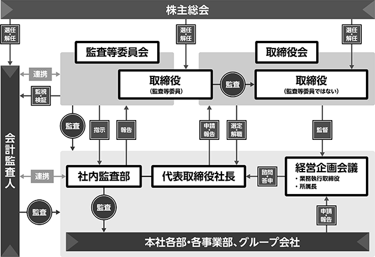

（注）株主としての権利内容に制限のない、標準となる株式であり、単元株式数は100株であります。
該当事項はありません。
該当事項はありません。
③ 【その他の新株予約権等の状況】
該当事項はありません。
該当事項はありません。
令和５年10月20日現在
(注) 自己株式368,575株は、「個人その他」に3,685単元、「単元未満株式の状況」に75株を含めて記載しております。
令和５年10月20日現在
令和５年10月20日現在
(注)「単元未満株式」欄の普通株式には、当社所有の自己株式75株が含まれております。
令和５年10月20日現在
該当事項はありません。
該当事項はありません。
該当事項はありません。
該当事項はありません。
（注）当期間における保有自己株式数には、令和５年12月21日から有価証券報告書提出日までの単元未満株式の買取り及び売渡による株式数は含めておりません。
当社は、株主の皆様への利益還元を経営の重要課題の一つとして位置付けており、配当原資確保のための収益力を強化し、継続的かつ安定的な配当を行なうことを基本方針としております。
当社は定款において中間配当を行うことができる旨を定めておりますが、１事業年度の配当回数につきましては、期末配当の年１回を基本方針としており、実施にあたっては収益状況などを勘案して、その都度決定する方針であります。
これらの剰余金の配当については、会社法第459条第１項の規定に基づき、剰余金の配当等を取締役会決議により行うことができる旨を定款に定めております。
当期の剰余金の配当につきましては、将来の事業展開と経営体質強化に必要な内部留保を考慮しつつ、上記方針に沿って１株当たり５円の普通配当を決定いたしました。
なお、内部留保金の使途につきましては、社会変革に対応する新分野に関する投資に充当し、当社の特異性と競争力をさらに強化する方針であります。
（注）基準日が当事業年度に属する剰余金の配当は、以下のとおりであります。
ａ．企業統治に対する基本的な考え方
当社は、従来から株主重視の基本方針に基づき、コーポレート・ガバナンスの充実を念頭においた経営の透明性や公正性、健全性を確保することが重要な経営課題と位置づけております。
経営環境の変化に的確に対応し、健全な成長及び発展を図るためには、業務執行の管理・監督機能の強化が重要であると認識しており、必要な体制・仕組みの整備に向けて取り組んでおります。
当社は、平成30年１月18日開催の当社第45回定時株主総会の決議に基づき、監査等委員会設置会社に移行いたしました。これにより、取締役会の監査・監督機能をより一層強化するとともに、業務執行を行う取締役への権限委譲により迅速な意思決定を行い、経営の効率性を高め、適時・適切なガバナンス体制の構築・運用に努めております。
ｂ．企業統治の体制の概要とその体制を採用する理由
当社における企業統治の体制は、取締役会・監査等委員会・社内監査部で実施しており、当社の規模及び組織体制からみて、企業統治は充分に機能しているものと判断しております。
なお、当社の各機関の基本説明は以下のとおりであります。
（取締役会）
取締役会は、代表取締役社長 中山正子を議長とし、平野吉彦、金子敏哉、上原信司、佐藤豊、大塚秀行、外川忠利、小林清吾、久保田正男（社外取締役）、渡部文雄（社外取締役）の10名で構成されており、原則として３ヶ月に１回及び必要に応じて随時開催しており、法令で定められた事項及び経営に関する重要事項について報告・討議・決議を行っております。
（監査等委員会）
監査等委員会は、小林清吾、久保田正男（社外取締役）、渡部文雄（社外取締役）の３名で構成されており、原則として毎月１回及び必要に応じて随時開催しており、独立した立場から取締役の職務執行の監査・監督を行っております。
（その他）
業務執行については、取締役会のほかに「経営企画会議」を設置して代表取締役社長 中山正子を議長とし、平野吉彦、金子敏哉、上原信司、佐藤豊、大塚秀行、外川忠利、その他議長の指名する者で構成されております。毎月１回開催しており、機動的な経営対応を図っておりますと同時に、情報伝達及び共有化と、危機管理の徹底に努めております。
ｃ．内部統制システムの整備の状況
当社は、取締役の職務執行その他会社の業務の適正を確保するため、取締役会において内部統制システム構築の基本方針を決議いたしました。この基本方針に基づき、内部統制の整備・向上に努めております。
（内部統制システム構築の基本方針）
当社は、会社法及び会社法施行規則並びに金融商品取引法に基づき、以下のとおり当社の業務の適正を確保するための体制（内部統制）に係るシステムの構築についての基本方針を次のとおりに定めております。
１）取締役及び使用人の職務の執行が法令及び定款に適合することを確保するための体制
・当社の経営理念に則り制定された「企業行動基準」に関する具体的手引書として「コンプライアンス・ガイドライン」を策定し、取締役及び使用人がコンプライアンスの徹底を図る。
２）取締役の職務の執行に係る情報の保存及び管理に関する体制
・取締役の職務の執行に関する情報は、文書及び記録の管理に関する規程に則り、保存及び管理を適正に実施するとともに、取締役からの閲覧請求には速やかに対応する。
３）損失の危険の管理に関する規程その他の体制
・代表取締役社長の下にリスク管理体制を構築し、リスク管理の推進を図るとともに、社内監査部は独立した立場から監査を実施し、その結果については、代表取締役及び監査等委員会に報告する。
４）取締役の職務の執行が効率的に行われることを確保するための体制
・取締役会は、経営目標を定め、業務担当取締役はその目標達成のための具体的施策及び職務分掌に基づいた効率的な達成の方法を策定し、業務を執行する。
５）当社及びその子会社から成る企業集団における業務の適正を確保するための体制
・グループ各社と緊密な連携を図り、企業集団としての経営の健全性及び効率性の向上に資することを目的として「関係会社管理規程」を制定し、規程に基づいてグループ会社を管理する部門（以下、管理部門という）を設置する。
・管理部門は、「関係会社管理規程」に基づいて、グループ会社の業務運営、財務状況等について報告を受け、必要に応じて改善等を指導する。
・管理部門は、グループ各社の経営に重大な影響を及ぼす可能性のある事象が発生したとき、あるいは発生する可能性が生じたときは、「関係会社管理規程」に従い、これに対応する。
・グループ各社は、業務分掌及び決裁権限に関する規程等に基づいて、効率的な職務の執行が行われる体制を整備する。
・グループ各社は、企業としての社会的責任とコンプライアンスの重要性を認識し、グループ各社の役職員が法令、定款、社内規程等を遵守して職務を執行することで、業務が適正に行われる体制を確保する。
・社内監査部は、グループ全体の内部統制の有効性を確保するため、必要に応じてグループ会社の監査を実施する。
６）監査等委員会の職務を補助すべき取締役及び使用人と他の取締役（監査等委員である取締役を除く。）からの独立性に関する事項
・社内監査部に所属する使用人が監査等委員会の職務補助を行う。
・監査等委員会の職務を補助する使用人の人事異動、人事評価等に関する事項については、常勤監査等委員の同意を得る。
７）取締役（監査等委員である取締役を除く。）及び使用人が監査等委員会に報告するための体制
・取締役（監査等委員である取締役を除く。）及び使用人は、当社に著しい損害を及ぼすおそれのある場合、直ちに、監査等委員会に対してその旨を報告する。
・また、常勤監査等委員は、社内の重要な会議に出席し取締役それぞれの職務執行に関する報告を受けるとともに、社内監査部から内部監査の実施状況及びコンプライアンスの状況について、適時報告を受ける。
当社の企業統治の体制を図示すると次のとおりであります。

８）取締役会の活動状況
当事業年度において、当社は取締役会を６回開催しており、個々の取締役の出席状況については次のとおりであります。
（注）1 齊木勝氏、中山修氏、林剛久氏については、令和５年1月17日開催の第50回定時株主総会終結の時をもって退任されましたので、在任中に開催された取締役会の出席状況を記載しております。
2 西潟常夫氏については、令和５年1月17日開催の第50回定時株主総会終結の時をもって辞任されましたので、在任中に開催された取締役会の出席状況を記載しております。
3 小林清吾氏については、令和５年１月17日開催の第50回定時株主総会において新たに取締役に選任されましたので、就任後に開催された取締役会の出席状況を記載しております。
取締役会における具体的な検討内容としては、法令および定款に定められた事項ならびに経営の基本方針等重要な業務に関する事項の決議を行うとともに、各取締役より業務執行状況の報告を受け、当社の重要な経営課題について適切な対策を講じるための協議を行っております。
② 取締役の定数
当社の取締役（監査等委員である取締役を除く。）は14名以内、監査等委員である取締役は５名以内とする旨定款に定めております。
③ 取締役の選任の決議要件
当社は、取締役の選任決議について、議決権を行使することができる株主の議決権の３分の１以上を有する株主が出席し、その議決権の過半数をもって行なう旨を定款に定めております。また、取締役の選任決議は、累積投票によらない旨も定款に定めております。
④ 株主総会決議事項を取締役会で決議できる事項
当社は、株主への機動的な資本政策及び配当政策を遂行するため、剰余金の配当等会社法第459条第１項各号に掲げる事項については、法令に別段の定めがある場合を除き、取締役会の決議によって定めることができる旨定款に定めております。
会社法第309条第２項に定める株主総会の特別決議について、議決権を行使することができる株主の議決権の３分の１以上を有する株主が出席し、その議決権の３分の２以上をもって行なう旨を定款に定めております。これは、株主総会における特別決議の定足数を緩和することにより、株主総会の円滑な運営を行なうことを目的とするものであります。
① 役員一覧
男性
（注）１ 久保田正男及び渡部文雄は、社外取締役であります。
２ 取締役（監査等委員である取締役を除く。）の任期は、令和５年10月期に係る定時株主総会終結の時から令和６年10月期に係る定時株主総会終結の時までであります。
３ 監査等委員である取締役の任期は、令和５年10月期に係る定時株主総会終結の時から令和７年10月期に係る定時株主総会終結の時までであります。
当社の社外取締役は２名であります。
社外取締役久保田正男氏につきましては、当社との人的関係・資本的関係又は取引関係その他利害関係はありません。また、社外取締役渡部文雄氏につきましても、当社との人的関係・資本的関係又は取引関係その他利害関係はありません。
久保田正男氏及び渡部文雄氏は、新潟県職員や団体役員として培った豊富な経験、幅広い見識を考慮し、経営の客観性・中立性を重視する視点で経営全般について監督できるものと考えております。
当社においては、社外取締役を選任するための独立性に関する基準を定めており、この基準に基づくほか、これまでの実績、人格・識見を考慮の上、選任を行っております。
③ 社外取締役による監督と内部監査、監査等委員会監査及び会計監査並びに内部統制部門との相互連携
社外取締役２名は、取締役会以外にも社内の重要な会議に出席するとともに、監査等委員会、社内監査部と会計監査人、内部統制部門と相互に連携して効率的な監査を実施するよう努めており、客観的な立場による監視機能強化の役割を担っております。
(3) 【監査の状況】
当社の監査等委員は、監査等委員会において定めた監査方針・監査計画に基づき、社内各部門の業務執行状況について定期的に業務監査を行っており、取締役会以外にも、定例的に開催される各種重要な会議にも出席し、経営監視の機能を果たしております。また、定期的に社内監査部及び会計監査人との意見交換や、代表取締役との意見交換を行っております。
当事業年度において、当社は監査等委員会を12回開催しており、個々の監査等委員の出席状況は次のとおりです。
監査等委員会における主な検討事項は、監査方針・監査計画、内部統制システムの運用状況、事業計画の進捗状況、会計監査人の評価及び監査報酬に対する同意等です。
常勤監査等委員の主な活動は、取締役会等の会議への出席、社員等への適宜ヒアリングを行うことにより継続的に監査を実施することです。
② 内部監査の状況
内部監査につきましては、独立した内部監査部門として社長直轄の社内監査部を設置し、年間計画に基づく内部監査を実施しております。これにより、内部牽制の実効性を補完し、職務権限規程に基づく社内各部門の適正な業務活動が効率的・合理的に遂行されていることの運営確認と問題点の改善指摘を実施しております。また、内部監査の実施状況を代表取締役並びに監査等委員会に対して報告し、重要な事項については協議の場を設けるなどして相互連携を図っております。
③ 会計監査の状況
ａ．監査法人の名称
有限責任監査法人トーマツ
ｂ．継続監査期間
19年間
（注）上記記載の期間は、調査が著しく困難であったため、当社が株式上場した以後の期間について調査した結果について記載したものであり、継続監査期間はこの期間を超える可能性があります。
ｃ．業務を執行した公認会計士
齋藤 康宏
石橋 智己
ｄ．監査業務に係る補助者の構成
公認会計士８名、会計士試験合格者等４名、その他５名であります。
ｅ．監査法人の選定方針と理由
会計監査人が独立性及び必要な専門性を有すること、当社の業務内容に対応して効率的な監査業務を実施できること、監査体制が整備されていることを踏まえたうえで、適任であると判断しております。
ｆ．監査等委員会による監査法人の評価
監査等委員会は、監査法人の品質管理体制、監査の実施体制、監査報酬の水準、監査等委員会や社内監査部とのコミュニケーションの状況等について、総合的に評価しております。
(監査公認会計士等の提出会社に対する非監査業務の内容)
前連結会計年度
該当事項はありません。
当連結会計年度
該当事項はありません。
該当事項はありません。
ｃ．その他の重要な監査証明業務に基づく報酬の内容
該当事項はありません。
ｄ．監査報酬の決定方針
当社の監査公認会計士等に対する監査報酬の決定方針は、当社の規模、業務の特性及び監査日数などを勘案し、稟議に基づいて決定しております。
ｅ．監査等委員会が会計監査人の報酬等に同意した理由
監査等委員会は、会計監査人の品質管理体制、監査計画の内容、会計監査の職務遂行状況及び報酬見積りの算出根拠等が適切であるかどうかについて必要な検証を行い、相当であると判断したため、会計監査人の報酬等の額について同意しております。
(4) 【役員の報酬等】
当社は、取締役の個人別の報酬等の内容に係る決定方針を定めており、その概要は以下のとおりです。
イ．基本方針
監査等委員である取締役及び社外取締役を除く取締役の報酬等については、基本報酬及び退職慰労金と業績に応じて支給される業績連動報酬としての賞与で構成されており、企業価値の持続的な向上を図るインセンティブとして機能するとともに、取締役個々の職責等を踏まえた適正な水準となることを基本方針とする。社外取締役及び監査等委員である取締役については、独立性を鑑み、原則として基本報酬（月額報酬）のみとする。
ロ．基本報酬の個人別の報酬等の額の決定に関する方針
監査等委員である取締役及び社外取締役を除く取締役の基本報酬は、月例の固定報酬とし、職位、職責、業績貢献度、そして在任年数等に基づき、当社の業績及び従業員の給与水準をも考慮しながら決定する。
ハ．業績連動報酬の内容及び額又は数の算定方針の決定に関する方針(報酬等を与える時期又は条件の決定に関する方針を含む)
当社の監査等委員である取締役及び社外取締役を除く取締役の賞与は金銭報酬とし、会社の業績及び従業員への支給水準等を勘案し決定する。
ニ．金銭報酬の額、業績連動報酬等の額または非金銭報酬等の額の監査等委員及び社外取締役を除く取締役の個人別の報酬等の額に対する割合の決定に関する方針
監査等委員である取締役及び社外取締役を除く取締役の種類別の報酬割合については、基本報酬100に対して賞与20、退職慰労金15を目安とする。
ホ．監査等委員である取締役を除く取締役の個人別の報酬等の内容についての決定に関する事項
監査等委員である取締役を除く取締役の個人別の報酬等の額については、取締役会決議にもとづき代表取締役社長がその具体的内容について委任をうけるものとし、その権限の内容は、基本報酬、賞与の額及びそれぞれの支給時期とする。
ヘ．監査等委員である取締役の個人別の報酬等の内容についての決定に関する事項
監査等委員である取締役の報酬等は、常勤、非常勤の別、業務分担の状況等を考慮し、監査等委員である取締役の協議により決定する。
ト．取締役の個人別の報酬等の内容に係る決定方針
代表取締役社長が監査等委員である取締役の助言を受けたうえで、方針案を策定し、令和３年２月25日開催の取締役会において決定方針を決議した。
② 取締役及び監査等委員である取締役の報酬額についての株主総会決議に関する事項
当社の役員報酬については、平成30年１月18日開催の第45回定時株主総会において、監査等委員である取締役を除く取締役については年額6億円以内（ただし、使用人兼務取締役の使用人分給与を含まない。）、監査等委員である取締役については年額1億円以内と決議されております。当該定時株主総会終結時点の取締役（監査等委員である取締役を除く）は７名、監査等委員である取締役は３名（うち、社外取締役は２名）であります。
③ 当事業年度に係る取締役の個人別の報酬等の内容が決定方針に沿うものであると判断した理由
当該事業年度に係る取締役の個人別の報酬等については、報酬等の内容の決定方法及び決定された報酬等の内容が決定方針と整合していることや、監査等委員及び社外取締役からの意見が尊重されていることを確認しており、当該決定方針に沿うものであると判断しております。
④ 役員区分ごとの報酬等の総額、報酬等の種類別の総額及び対象となる役員の員数
報酬等の総額が１億円以上である者が存在しないため、記載しておりません。
(5) 【株式の保有状況】
当社は、株式の価値の変動を考慮し売買することで得られる利益や配当の受領を目的として保有する株式を純投資目的である投資株式とし、取引関係の維持・発展・業務連携等を通じた持続的な成長を目的として保有する株式を、純投資目的以外の目的である投資株式として保有しております。
当社の事業戦略上の重要性並びに取引先との事業上の関係性も総合的に勘案し、その保有意義を個別に判断しております。
該当事項はありません。
該当事項はありません。
（特定投資株式）
（注）１ 定量的な保有効果については、記載が困難であります。保有の合理性は、円滑な取引関係維持による長期的な企業価値の向上に資するかどうかを検討しております。
２ 保有先企業は当社の株式を保有しておりませんが、同社グループ企業が当社の株式を保有しております。
（みなし保有株式）
該当事項はありません。
③ 保有目的が純投資目的である投資株式
該当事項はありません。